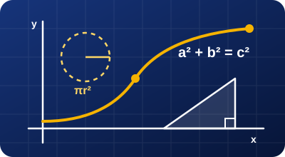

Maths & Science made simple for Classes 8, 9 & 10
MT Classes, Motihari — CBSE coaching with clear concepts, chapter-wise notes, video lessons, online tests and attendance updates for parents.
Learn, practise and track
Notes
Chapter-wise notes and quick-revision sheets for every class.
Classes
Batch timings for Classes 8, 9 and 10, plus live class link.
YouTube videos
Watch chapter lessons again at home, any time.
Online test
Timed MCQ tests with instant score and step-by-step solutions.
Online attendance
Teachers mark it in seconds; parents check it with a roll number.
Admission & doubts
Send an enquiry or ask a question directly on WhatsApp.
Classes we teach
Strong basics, steady practice
MT Classes teaches Maths and Science to students of Classes 8, 9 and 10 in S.K. Nagar, Motihari. We follow the NCERT books closely, explain every concept from the basics and test regularly, so students walk into exams with confidence.
What we teach

Mathematics
Algebra, geometry, trigonometry, mensuration and statistics — every formula explained, then practised.
Science
Physics, Chemistry and Biology with diagrams, numericals and NCERT-based questions.
Life at MT Classes
Our toppers
What students and parents say
Common questions
Which classes and subjects are taught?
Maths and Science for Classes 8, 9 and 10 (CBSE).
How do I take an online test?
Open the Online Test page, choose your class and chapter, enter your name and start. You get your score and solutions immediately.
How can parents check attendance?
Open the Attendance page, choose 'Student / Parent' and enter the roll number and code given by the institute.
Where do I get notes?
The Notes page has chapter-wise notes for each class. Quick-revision notes can be read online and printed.
How do I join?
Fill the enquiry form on the Contact page or message us on WhatsApp to book a free demo class.
Ready to start?
Visit us in S.K. Nagar, Motihari or send an enquiry — we will call you back.
Send an enquiry